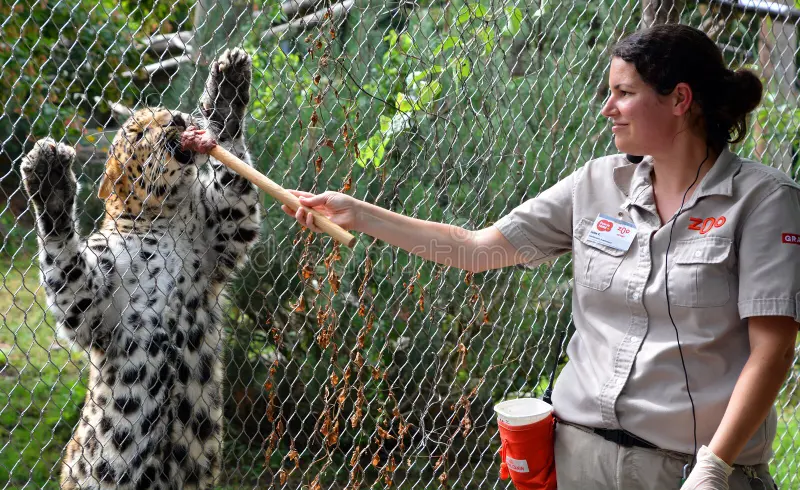
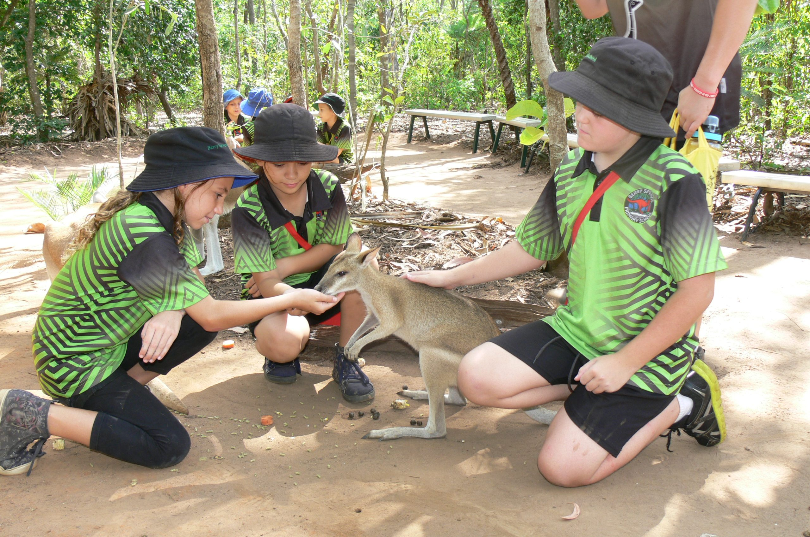
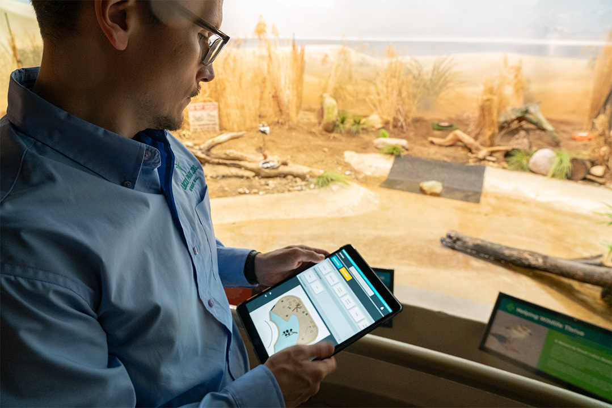
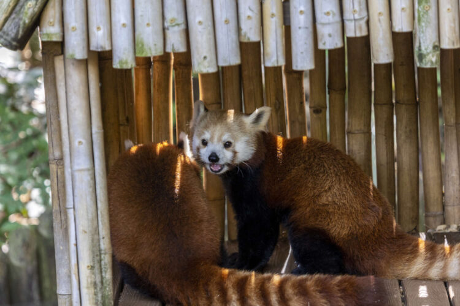
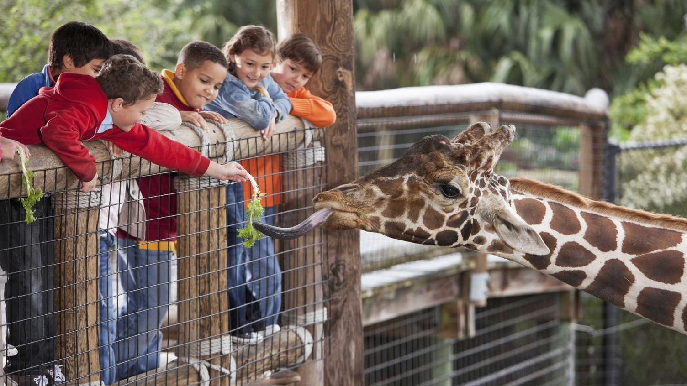
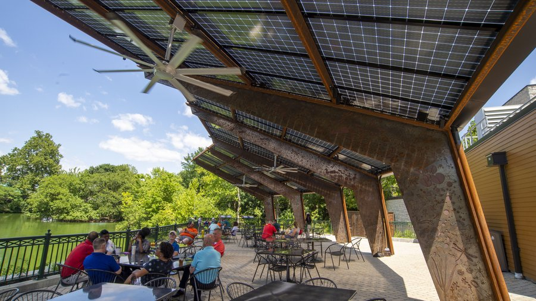

Our Mission
At Valeria di Notte Zoo, our mission is to inspire, educate, and act, to foster a deeper connection between humans and the natural world. We believe that zoos are not merely places of observation, but powerful platforms for conservation, research, and public engagement. Nestled in the heart of Timisoara, our zoo is a sanctuary where wildlife thrives, science flourishes, and visitors leave with a renewed commitment to protecting our planet.
Conservation First
We are deeply committed to the conservation of endangered species and habitats. Through carefully designed breeding programs, habitat restoration projects, and international partnerships, we strive to prevent extinction and restore ecological balance. Our zoo is a proud member of the European Association of Zoos and Aquaria (EAZA) and supports over a dozen global conservation initiatives, including the protection of Amur leopards, Sumatran tigers, and African forest elephants. Each visit to Valeria di Notte Zoo directly contributes to these efforts, ensuring a brighter future for wildlife.
Education at the Core
Education is the cornerstone of change. Every exhibit, guided tour, and educational program at our zoo is designed to awaken curiosity, promote environmental literacy, and empower future generations. We welcome thousands of school groups annually and offer tailored workshops for all ages, from interactive "Little Explorers" sessions for toddlers to in-depth research collaborations for university students. Our immersive exhibits, such as the Nocturnal Worlds Pavilion and the Rainforest Canopy Walk, bring learning to life in unforgettable ways.
Science and Research
Valeria di Notte Zoo is a hub for groundbreaking research in animal behavior, veterinary medicine, and biodiversity. In partnership with institutions like the University of Valeria and the Global Wildlife Conservation Network, our team conducts studies that influence global conservation strategies. From pioneering reproductive techniques for rare species to tracking climate change impacts on migratory birds, our work extends far beyond our gates. Visitors can even witness science in action at our Research Open House events.
Animal Welfare
The well-being of our animals is paramount. Our enclosures are meticulously designed to replicate natural habitats, offering space, stimulation, and social opportunities tailored to each species. A team of expert veterinarians, nutritionists, and behavioral specialists ensures round-the-clock care, while our enrichment programs—like puzzle feeders for primates and scent trails for big cats—keep minds and bodies active. We adhere to the Five Freedoms of animal welfare and exceed international standards in every aspect of care.
Community and Inclusion
Valeria di Notte Zoo is a cornerstone of the community. We collaborate with local schools, artists, and nonprofits to make wildlife accessible to all. Our Access for All initiative includes sensory-friendly hours, wheelchair-accessible pathways, and programs for visitors with disabilities. Through partnerships with urban youth groups and subsidized memberships for low-income families, we ensure that everyone can experience the wonder of nature, regardless of background or ability.
Toward a Sustainable Future
Sustainability is woven into every facet of our operations. Our zoo runs on 100% renewable energy, with solar panels and geothermal systems powering exhibits. We’ve eliminated single-use plastics, compost over 90% of organic waste, and source food for animals and visitors from local, ethical suppliers. By 2030, we aim to become a zero-waste, carbon-neutral institution—leading by example in the fight against climate change.
Together, we can protect wildlife and inspire wonder for generations to come.